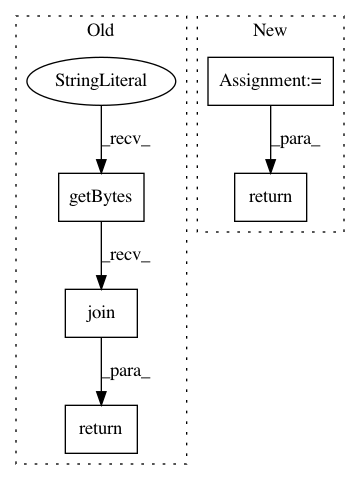

91b9928ad571adaefe5e86b1281f17e130729a8b,python/ray/serve/backend_worker.py,RayServeReplica,ensure_serializable_response,#RayServeReplica#Any#,221
Before Change
await never_set_event.wait()
await response(scope=None, receive=mock_receive, send=mock_send)
content = b"".join(body_buffer)
return starlette.responses.Response(
content,
status_code=response.status_code,
headers=response.headers,
media_type=response.media_type)
else:
return response
async def invoke_single(self, request_item: Query) -> Any:
After Change
never_set_event = asyncio.Event()
await never_set_event.wait()
sender = ASGIHTTPSender()
await response(scope=None, receive=mock_receive, send=sender)
return sender.build_starlette_response()
return response
async def invoke_single(self, request_item: Query) -> Any:
logger.debug("Replica {} started executing request {}".format(
In pattern: SUPERPATTERN
Frequency: 3
Non-data size: 5
Instances
Project Name: ray-project/ray
Commit Name: 91b9928ad571adaefe5e86b1281f17e130729a8b
Time: 2021-03-20
Author: simon.mo@hey.com
File Name: python/ray/serve/backend_worker.py
Class Name: RayServeReplica
Method Name: ensure_serializable_response
Project Name: dask/distributed
Commit Name: 85c35064ec1786055cbc741a126fa581493acbe1
Time: 2020-07-20
Author: jakirkham@gmail.com
File Name: distributed/protocol/utils.py
Class Name:
Method Name: pack_frames_prelude
Project Name: dask/distributed
Commit Name: ddc6377b76f957ef4a3a607f1dc2cf2ba772abc7
Time: 2020-05-21
Author: jakirkham@gmail.com
File Name: distributed/protocol/serialize.py
Class Name:
Method Name: pickle_loads